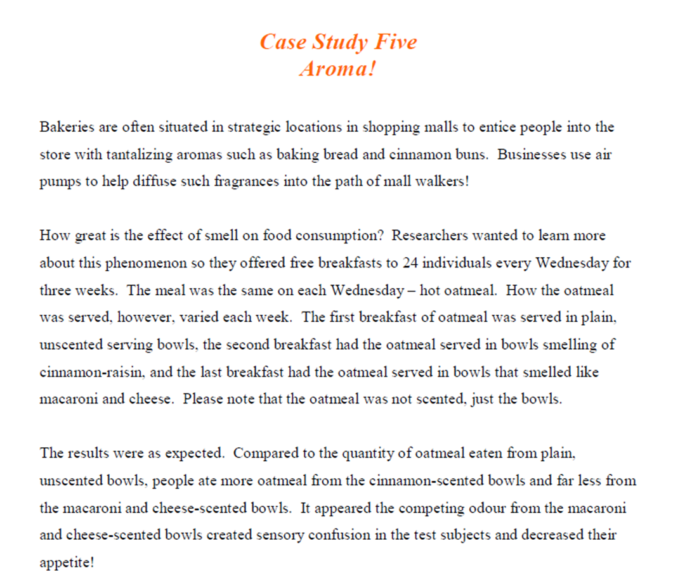

Psychologists have known for a long time that smell and taste are linked. A popular experiment in junior high science class involves blind taste tests. You can do this type of experiment at home. First, blindfold a couple of your friends and have them pinch their noses shut. Then, have your friends open their mouths while you feed them small samples of various flavours of potato chips. Can they tell which chip is the BBQ chip and which is the Salt 'n' Vinegar chip?
